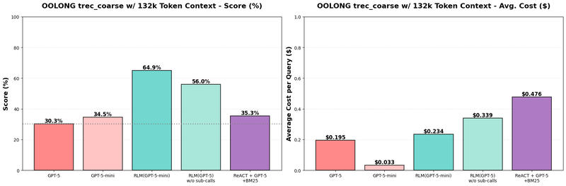
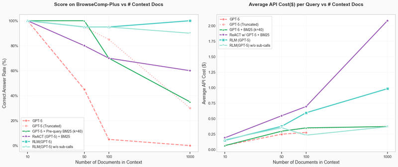

Feature 02 · ARTICLE
Recursive Language Models
We propose Recursive Language Models (RLMs): a language model that never reads its whole input. The prompt is stored as a variable in a Python REPL. The model peeks at it, greps it, splits it, and calls itself or another LM on the pieces, then returns an answer. To the caller it is one ordinary model call. On a hard split of the OOLONG benchmark, RLM(GPT-5-mini) gets more than double GPT-5’s correct answers, and is cheaper per query on average. On a small BrowseComp-Plus sample, RLM(GPT-5) keeps perfect accuracy at 1,000 documents, and we find RLMs do not degrade when given 10M+ tokens. These are very early results. We think RLMs trained explicitly to recurse are likely to be the next milestone in general-purpose inference-time scaling, after reasoning models and ReAct-style agents.
The full paper has been accepted to NeurIPS 2026. Code: github.com/alexzhang13/rlm, with a minimal version at rlm-minimal.
Context rot
Anthropic defines context rot as the model recalling less as the context grows. The definition doesn’t fully hit the mark. On needle-in-the-haystack benchmarks like RULER, most frontier models score 90%+. Yet anyone with a bloated Claude Code history, or a long ChatGPT chat, has watched the model get dumber. We don’t write about it in our papers because we can’t benchmark it.
The natural fix: split the context into two model calls, then combine them in a third. That intuition is the basis for an RLM.
The idea

An RLM is a thin wrapper around an LM. rlm.completion(messages) directly replaces gpt5.completion(messages). We decompose by context, not by problem.
The root LM receives only the query. The context sits in a REPL variable. The root LM writes code, reads truncated output, and can call a sub-LM inside the REPL as if it were a function. When confident, it answers with FINAL(answer), or returns a variable it built with FINAL_VAR(var).
This gives three benefits in practice:
The root LM’s context grows slowly, because it never sees the whole input.
It can narrow the context with regex, then recurse over what remains. This matters where indexing a retriever on the fly is expensive.
The context can be any modality that fits in memory.
The path a model takes through its context is learnable, and can be RL-ified the way reasoning is trained now. This doesn’t require models trained on huge contexts, because no single language model call should require handling a huge context.
The environment need not be a REPL, but we argue it’s a good choice. In our experiments the recursion depth is 1: the root LM calls LMs, not other RLMs. Allowing deeper recursion is an easy change, and we expect it to lead to stronger systems.
Results


Many long-context benchmarks turned out to be short, or already solved; on some, models could answer without the context at all. We found two where frontier models struggle.
OOLONG. The trec_coarse split asks distributional questions over 3,000 to 6,000 unlabeled rows, such as how many questions from a given set of users should be labeled ‘entity’. The model must infer each label. We took queries over 128k tokens (~100 queries). Every input fits in GPT-5’s window, so no failure comes from truncation.
At 132k tokens, RLM(GPT-5-mini) beats GPT-5 by over 34 points (~114%) and is nearly as cheap per query. The median query is cheaper; a few expensive outliers raise the average.
Removing recursion costs about 10%, likely because many questions need semantic labeling.
At 263k tokens, the gain is over 15 points (~49%), and cheaper per query on average. The gains roughly transfer, with some degradation, mostly on counting problems. GPT-5-mini drops; GPT-5 doesn’t, though it already missed most counting questions at 132k.
BrowseComp-Plus. About 100K documents, multi-hop queries: you can’t tell a document holds the answer until you’ve connected it to others. GPT-5 fits about 40 documents before its 272k-token limit. We ran 20 random queries, a small subset, at 10, 50, 100, and 1,000 documents, always including the gold documents.
RLM(GPT-5) is the only method to reach and keep perfect performance at 1,000 documents. Without sub-calls, it reaches 90%.
Base GPT-5, however conditioned, drops off as documents increase. Only the iterative methods (RLM, ReAct) hold up past 100.
RLM cost per query scales reasonably with context length.
This works without fine-tuning, architecture changes, or a retriever, at 10M+ tokens. The baselines index BM25 per query, a stronger condition than indexing the full corpus, and RLMs still outperform the ReAct + GPT-5 + BM25 loop.
What the RLM does
We vibe-coded a visualizer to watch the trajectories. The root LM starts knowing only the query and that a context variable exists. Strategies emerged:
Peeking. Like a programmer glancing at a dataset, it reads the first 2,000 characters.
Grepping. It uses regex, not semantic retrieval, to find relevant lines.
Partition + map. When the target can’t be grepped, it chunks the context and has sub-LMs label each piece.
Summarization. It summarizes subsets so the root LM can decide.
Long input, long output. On LoCoDiff, the model must replay a
git diffhistory; past 75k tokens, GPT-5 solves under 10%. RLM(GPT-5) sometimes one-shots it by processing the diffs in code.
We expect more patterns as models improve and are trained this way. How efficiently a model uses the REPL is underexplored; speed, efficiency, and performance can all be optimized as scalar rewards.
Limitations
Our implementation is not optimized. Recursive calls are blocking and use no prefix caching, so a query takes from a few seconds to several minutes. We have no strong guarantees on total cost or runtime. For the systems community, there is a lot of low-hanging fruit here.
Where this goes
To me, the most plausible cause of context rot is that long sequences are out of distribution for training. RLMs aim to issue LM calls without solving that problem.
RLMs are not agents. Agents decompose by task, following human intuition about what an LM can digest. RLMs decompose by context, and leave the decision to the LM.
RLMs improve as LMs improve. If tomorrow the best LM can handle 10M tokens, an RLM can reasonably handle 100M, maybe at half the cost. I personally have no idea what will work in the end, but I’m excited to see where this idea goes.